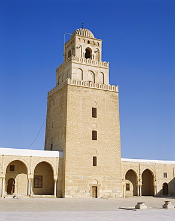

The Great Mosque of Kairouan (Uqba Mosque)
Location: Kairouan
Era: Founded in 670 AD by Uqba ibn Nafi, with major expansions in the 9th century under the Aghlabids.
Significance: A masterpiece of Islamic architecture and one of the oldest and most important mosques in North Africa. Its vast courtyard, towering minaret, and exquisite mihrab showcase early Islamic design.
The Zitouna Mosque (Mosque of the Olive Tree)
Location: Tunis
Era: Founded in 732 AD, significantly developed during the Aghlabid and Hafsid periods.
Significance: Located in the heart of the Medina of Tunis, it has been a center of Islamic learning and scholarship for centuries.
The Ribat of Monastir
Location: Monastir
Era: Built in 796 AD during the Aghlabid dynasty.
Significance: A fortified monastery and one of the oldest surviving Islamic military structures in Tunisia. It served both as a defensive stronghold and a place of religious devotion.
The Ribat of Sousse
Location: Sousse
Era: Founded in the 8th century and expanded under the Aghlabids.
Significance: Similar to the Monastir Ribat, it was both a religious and military building. Its watchtower offers panoramic views of the city and coast.

Aghlabid Basins
Location: Kairouan
Era: Constructed in the 9th century by the Aghlabids.
Significance: A remarkable example of early Islamic hydraulic engineering, these large water reservoirs were part of a sophisticated system to supply the city with water.
The Medina of Tunis
Location: Tunis
Era: Developed during the Hafsid dynasty (13th–16th centuries).
Significance: A UNESCO World Heritage Site, the Medina includes numerous mosques, palaces, madrasas, and souks, showcasing Islamic urban planning and architecture.
The Zawiya of Sidi Sahab (Mosque of the Barber)
Location: Kairouan
Era: Built in the 17th century but dedicated to Abu Zama'a al-Balawi, a companion of the Prophet Muhammad.
Significance: Known for its intricate tile work and mausoleum, it is a place of pilgrimage and spiritual significance.

The Kasbah Mosque
Location: Tunis
Era: Built in 1230 by the Hafsid ruler Abu Zakariya Yahya.
Significance: Its Almohad-style architecture includes a square minaret and striking geometric decorations.